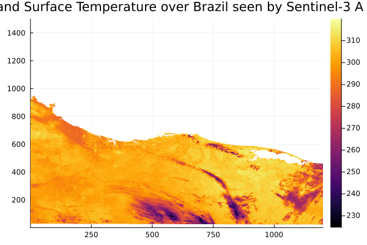

CopernicusData.jl
Documentation for CopernicusData.jl
CopernicusData is a framework to be used for Earth Observation satellite data processing from the EU Copernicus program, especially the Sentinels Missions. It defines a data structure for managing, storing EO data and a light orchestration framework to implement and chain processing steps.
The Data structure
The data structure used in CopernicusData.jl is mostly focused on zarr format, using Zarr.jl package. The data representation is based on YAXArrays.jl. Though it is designed to handle the Sentinels new EOPF product format, it remains fully generic and can represent any kind of hierarchical data tree structure. Please visit https://eopf.copernicus.eu/eopf/ to have further details about the EOPF data format.
YAXTrees module
The YAXTrees module provide a hierarchical tree structure of YAXArrays or Datasets.
Below is a basic usage to construct a tree structure
root = YAXTree()
root.childA = YAXTree("childA")
root.childB = YAXTree("childB")
root.childA.grandchild = YAXTree("grandchild")
root📂 root
├─ 📂 childA
├─ └─ 📂 grandchild
└─ 📂 childB
Using Zarr backend, a recursive zarr structure representing Copernicus product can be accessed with the open_datatree function. Using the feature from YAXArrays.jl, based on DiskArrays.jl, the data is lazy loaded.
tree = open_datatree(path)📂 root
├─ 📂 conditions
├─ ├─ 📂 auxiliary
├─ ├─ └─ 📂 orphan
├─ ├─ 📂 geometry
├─ ├─ 📂 meteorology
├─ ├─ 📂 processing
├─ ├─ └─ 📂 orphan
├─ └─ 📂 time
├─ 📂 measurements
├─ └─ 📂 orphan
└─ 📂 quality
└─ └─ 📂 orphan
A more detailed view can be displayed
YAXTrees.show_tree(tree; details=true)📂 root
├─ 📂 conditions
├─ ├─ 📂 auxiliary
├─ ├─ 📊 Dataset
├─ ├─ └─ 📂 orphan
├─ ├─ └─ 📊 Dataset
├─ ├─ 📂 geometry
├─ ├─ 📊 Dataset
├─ ├─ 📂 meteorology
├─ ├─ 📊 Dataset
├─ ├─ 📂 processing
├─ ├─ 📊 Dataset
├─ ├─ └─ 📂 orphan
├─ ├─ └─ 📊 Dataset
├─ └─ 📂 time
├─ └─ 📊 Dataset
├─ 📂 measurements
├─ 📊 Dataset
├─ └─ 📂 orphan
├─ └─ 📊 Dataset
└─ 📂 quality
└─ 📊 Dataset
└─ └─ 📂 orphan
└─ └─ 📊 DatasetYou can use dictionary or the traditional dot indexing to access any node of the tree structure
tree["measurements"].dataYAXArray Dataset
Shared Axes:
(↓ columns Sampled{Int64} 1:1500 ForwardOrdered Regular Points,
→ rows Sampled{Int64} 1:1200 ForwardOrdered Regular Points)
Variables:
latitude, longitude, lst, x, y
tree.conditions.geometry.solar_zenith_tn┌ 130×1200 YAXArray{Union{Missing, Float64}, 2} ┐
├───────────────────────────────────────────────┴──────────────────────── dims ┐
↓ columns Sampled{Int64} 1:130 ForwardOrdered Regular Points,
→ rows Sampled{Int64} 1:1200 ForwardOrdered Regular Points
├──────────────────────────────────────────────────────────────────── metadata ┤
Dict{String, Any} with 8 entries:
"units" => "degrees"
"coordinates" => "x y"
"short_name" => "solar_zenith_tn"
"missing_value" => NaN
"name" => "solar_zenith_tn"
"long_name" => "solar zenith angle"
"standard_name" => "solar_zenith_angle"
"_FillValue" => NaN
├─────────────────────────────────────────────────────────────── loaded lazily ┤
data size: 1.19 MB
└──────────────────────────────────────────────────────────────────────────────┘EOProduct module
***deprecated***
Orchestration
A light orchestration is providing by the ̀EOTriggering module.
[parallel_context]
cluster_type = "local"
processes = 3
[logging]
level = "Info"
["I/O"]
modification_mode = "newproduct"
["I/O".output_product]
store_type = "zarr"
id = "output"
path = "output.zarr"
[["I/O".inputs_products]]
store_type = "zarr"
id = "dummy"
path = "../resources/yax.zarr"
[[workflow]]
name = "dummy2"
processing_unit = "dummy_processing_unit"
module = "EOTriggering"
inputs = ["dummy1"]
[workflow.parameters]
[[breakpoints]]
break_mode = "s"
storage = "dummy1.zarr"
related_unit = "dummy1"
[breakpoints.store_params]
nothingpayload_file_path="../resources/payload.toml"
EOTriggering.run(payload_file_path)[ Info: List of inputs:
[ Info: - input: dummy
[ Info: Running dummy2(EOTriggering.dummy_processing_unit)
[ Info: Hello !